节理流体流动
引言
由于岩石节理影响岩体整体力学和水力行为，人们已进行了广泛试验与分析研究。节理是两个岩石表面之间的接触面，其水力—力学行为主要由两表面粗糙度控制。粗糙度取决于节理成因，例如张裂面比经历过一定剪切变形的裂面更粗糙。节理紧邻的狭窄岩石区域，包括节理本身，其水力—力学行为显著不同于远离节理的“完整”岩石。因此：
- 按单位节理“厚度”计，节理变形性远大于完整岩石。两个接触表面的粗糙度，使实际接触面积远小于二者的交叠面积。
- 岩体沿节理平面的抗剪强度远小于完整岩石。节理是材料中的不连续面，抵抗剪切变形主要依靠摩擦和接触表面粗糙度。
- 节理横截面积远大于完整岩石孔隙的横截面积，因此通过节理的流量比通过完整岩石孔隙的流量高数个数量级。然而，未破裂块体的孔隙分布于整个岩体，因此基质孔隙率远大于节理贡献的岩体孔隙率。于是，岩体流动受节理控制，而大部分流体存储在完整岩石孔隙中。
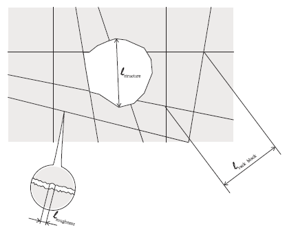
图 1：岩体模型中的长度尺度。
节理粗糙度的长度尺度，远小于节理和工程结构的长度尺度，见上图：
分析满足式 (1) 关系等条件的实际问题时，若在工程结构尺度上显式表示节理粗糙度几何，效率会极低；应尽可能忽略粗糙度细节。在岩石块体和／或工程结构尺度的模型中，应将节理视为二维[1]不连续面，二维模型中则为一维，并以宏观本构关系及相关属性描述，例如法向和剪切刚度、摩擦、剪胀、水力开度。节理宏观属性对应一个“点”，但该点实际代表一块称为“代表性基本面积”（REA）的节理区域。其特征长度远大于节理表面粗糙度特征长度 \(l_{roughness}\)，远小于模型特征长度 \(l_{rock\ block}\) 或 \(l_{structure}\)。REA 层面定义的宏观属性和变量，即微观效应积分结果，将节理参数非均匀性表示为节理平面位置 \(x_{i}\) 的平滑变化函数，见图 2（Figure 2）。
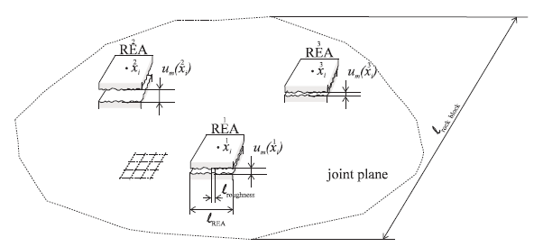
图 2：节理平面中的代表性基本面积与非均匀性。
节理水力学与不可压缩流动的平行板模型
节理流动的控制方程来自简化形式的 Navier-Stokes 方程。将两近乎平行、不透水边界之间的流动 Navier-Stokes 方程，与流体不可压缩条件结合，可简化为 Reynolds 方程（Batchelor 1967）：
其中，\(u = (x_i)\) 为平面内某点 \(x_i\)（\(i = 1,2\)）处两不透水边界间距；\(\phi = z + p/\rho g\) 为水头；\(g\) 为重力加速度；\(\rho\) 为流体密度；\(\mu\) 为流体黏度；\(z\) 为高程；\(p\) 为流体压力。式 (2) 沿两不透水边界间距离积分。对于岩石块体间的节理表面，式 (2) 沿分隔两块体的薄平面接触面厚度积分。
式 (2) 成立要求流动为层流，即流体以平行层流动。Reynolds 数是描述流动条件会产生层流还是湍流的无量纲数：
其中，\(u_c\) 为特征横截面尺寸，\(v_{\rm max}\) 为流体最大速度。Reynolds 数衡量惯性力与黏性力之比，从而量化给定流动条件下两类力的相对重要性。
其中，\(\alpha\) 为包围流体的两表面夹角。式 (4) 本质上保证流动保持层流。根据式 (2)，单位板宽的流量可写为
其中，单条裂隙的渗透率为 \(u^2/12\)，水力传导系数为 \(k_H = \rho gu^3/12 \mu\)。
注意，式 (5) 适用于流动主要发生在裂隙或厚度很小的平面通道中的情况。如果流体在固体块体间不规则三维形状的大空隙中流动，则不再适用。
平行板模型的适用范围、水力开度与力学开度
式 (2) 中，\(u(x_i)\) 是 xi 点处节理两粗糙表面间实际距离。通常，边值问题中节理开度变化尺度远小于模型特征长度，例如块体尺寸或工程结构特征长度。因此，最好建立宏观尺度适用的 \(q_i\) 与 \(\phi, _i\) 关系，同时尽可能忽略局部开度变化。初步可采用与式 (2) 相同形式的关系，但将 uh 视为与节理表面 REA 相关的宏观参数，即
其中，\(u_h(x_i)\) 为与 REA 对应的节理水力开度。然而，许多研究者质疑将式 (6) 作为岩石节理流动模型的有效性。普遍认为，式 (6) 仅在一定 \(u_h\) 范围有效。因此：
- 上限：\(u_{h}\) 增大，使 Reynolds 数超过某个临界值后，流动变为湍流。Iwai（1976）确定岩石节理临界 Reynolds 数为 \(Re\) = 100，而 Louis（1974）得到 \(Re\) = 2300。
- 下限：节理水力开度 \(u_{h}\) 不能通过力学作用降为零，即即使在极高应力下，节理仍有残余流动。不匹配节理闭合时，两表面实际接触面积增加，但不会等于名义节理面积。高压应力下，不匹配粗糙度在节理平面形成通道；流动局部化，并强烈依赖宏观 REA 表述中被抽象掉的粗糙度细节。实际上，此时甚至无法定义 REA。这对建模造成严重问题：模型响应由特征长度远小于模型特征长度的几何细节控制，见图 1（Figure 1）。
反对式 (6) 在上述上下限内有效的主要理由，是难以确定水力开度 \(u_h\)。水力开度 \(u_h\) 是力学开度 \(u_m\) 的函数，后者定义为节理表面平均间距。力学开度难以直接测量，多数作者假设 \(u_h = u_m\)。Alvarez 等（1995）汇总了已发表的节理导流试验结果。初始开度 \(u_{m0}\) 是加载循环开始时的开度。有的作者将它等同于压缩过程中的最大节理位移；另一些作者测量最大闭合时的残余流量，再根据式 (6) 计算残余开度，将其加到最大闭合量上，得到初始力学和水力开度。用计算所得、作为力学开度函数的水力开度代入式 (6)，将预测流量与实测比较，往往差异显著。Witherspoon（1980）提出以下形式的“立方定律”：
其中，\(F\) 为修正系数。比较式 (6) 与 (7)，得到：
Detournay（1980）提出水力开度 \(u_h\) 与节理变形 \(\Delta u_m\) 的关系：
这使“立方定律”能更普遍地拟合试验结果。假定一维流动，节理导流系数 \(k_H\) 定义为：
假定节理导流系数与水力开度的关系如下：
可得
未知参数 \(u_h0\) 和 \(f\) 可通过试验结果线性回归求得。也可通过线性回归检验式 (7) 和 (11) 对特定数据集的适用性。Alvarez 等（1995）重新分析部分已发表节理导流数据，证实式 (11) 所给“修正立方定律”的有效性。
流量随节理闭合变化，有两个原因：
- 节理闭合使流体通过的横截面积减小；以及
- 两节理表面实际接触面积增加，使流动路径更曲折。
参数 \(f\) 反映粗糙度对流动曲折度的影响。对于光滑或咬合节理，\(f\) 约为 1.0；对于跨度与粗糙度高度之比较小的不匹配节理，\(f\) 小于 1.0。
岩体中水力—力学耦合流动公式
岩体流体流动是水力—力学耦合问题，即流体压力影响力学变形，力学变形也影响压力。裂隙岩体水力—力学耦合包含三个方面：
- 孔隙压力对裂隙岩体变形和强度的影响；
- 力学变形对渗透性的影响；以及
- 力学变形对孔隙压力的影响。
离散裂隙网络水力—力学耦合公式中，力学变形通过改变裂隙开度，影响渗透性。
孔隙压力对变形和强度的影响
裂隙内流体压力影响法向变形。当岩石裂隙充满一定压力的流体时（图 3（Figure 3）），裂隙法向变形是岩石围压或总法向应力 \(\sigma_n\) 与流体压力 \(p_p\) 某种线性组合的函数。任何能产生相同裂隙变形的 \(\sigma_n\) 与 \(p_p\) 线性组合，都称为裂隙“有效应力” \(\sigma'_n\)。Walsh（1981）由孔隙空间体积在法向应力和孔隙压力作用下不变的条件，推导有效应力表达式：
其中，\(v_p\) 为孔隙空间体积，\(\beta_s\) 为裂隙周围岩石可压缩性。式 (12) 第一项为干裂隙在等于 \(d \sigma_n + d p_p\) 的“围压”下的变形，压应力为负、流体压力为正；第二项为等于 \(d p_p\) 的静水压力导致裂隙孔隙空间增加量（图 3（Figure 3））。可由式 (12) 得到有效应力表达式（Walsh 1981）：
或简写为，
试验测得有效应力系数 \(\alpha\) 范围为 0.5 < \(\alpha\) < 1.0。粗糙表面张裂隙的 \(\alpha \sim\) 较小，约为 0.5；表面光滑裂隙的值较大，即 \(\alpha \sim\) 约为 1.0。
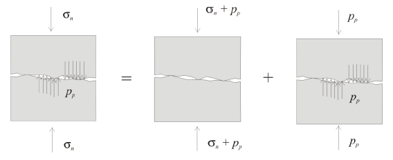
图 3：裂隙法向变形。
孔隙压力也通过有效应力原理影响岩石裂隙强度。裂隙拉伸与剪切破坏条件均以有效应力而非总应力表示。不过，评估岩石裂隙法向或剪切强度时，有效应力始终定义为 \(\sigma'_n = \sigma_n + p\)，即有效应力系数始终为 1。
力学变形对渗透性的影响
力学开度 \(u_m\) 定义为裂隙表面平均间距，是力学变形的函数。显然，式 (6) 计算岩石裂隙流量所用水力开度 \(u_h\)，是力学开度 \(u_m\) 的函数。但假设二者相等时，将式 (6) 预测流量与实测比较，往往差异显著。水力开度与力学开度关系，以及它们对渗透性变化的影响，见平行板模型的适用范围、水力开度与力学开度（Range of Validity of Parallel Plate Model, Hydraulic Aperture, and Mechanical Aperture）。
变形对孔隙压力的影响
可变形岩石裂隙中微可压缩流体的连续性方程为：
结合式 (5) 与 (15)，假定 \(u = u_m = u_h\)，且 \(u\) 不随位置变化，可得
这是裂隙内部压力的扩散方程。一般而言，裂隙开度 \(u\) 不仅取决于局部裂隙刚度和流体压力，还取决于更大体积岩体的力学响应。因此，式 (14) 的 \((K_w / u)(\delta u / \delta t)\) 项为外部“源”项，由流动与固体模型力学变形的耦合确定。该项表示由于岩体、特别是裂隙变形，导致岩石裂隙内被“困住”的水，即不排水条件下的水产生的压力变化。
3DEC 节理模型
本构模型与相关属性
如前述，描述节理本构响应的模型可能很复杂。但 3DEC 实现的模型采用简单的节理行为近似。
在 3DEC 中，节理法向和剪切刚度由线弹性弹簧表示，抗剪阻力通常由库仑滑移定律描述。指定剪胀角即可表示剪胀响应。
模拟节理流动时，用户还必须定义三个附加参数，表示节理开度对有效应力的本构响应。3DEC 实现的开度—有效应力关系相对简单，示意见图 4（Figure 4）。水力开度与有效应力基本呈双线性关系，并假定式 (14) 的有效应力系数 \(\alpha\) 为 1.0。
水力开度一般为
其中，\(u_{h0}\) 为零法向应力时的节理开度，\(\Delta u_n\) 为节理法向位移，正值表示张开。节理开度还受下限 \(u_{res}\) 限制，即最小残余开度；低于该值，力学闭合不再影响接触渗透性。用户必须定义零应力开度 \(u_{h0}\) 和残余水力开度 \(u_{res}\)。注意，如果 block insitu 命令采用 nodisplacements 关键字，或施加原位应力时将残余开度 \(u_{res}\) 设为等于 \(u_{h0}\)，则 \(u_{h0}\) 也可表示原位应力状态的节理开度。
除零应力和残余水力开度外，为提高显式计算效率，还可假定最大值 \(u_{max}\)，作为流量计算采用的开度上限。但力学开度始终由零应力开度加上差动法向位移得到，即 \(u_m = u_{h0} + \Delta u_n\)，可大于 \(u_{max}\)。定义节理导流系数与水力开度关系时，见式 (10)，假定 \(f\) = 1.0。这意味着，除力学开度超过 \(u_{max}\) 时外，力学开度等于水力开度。
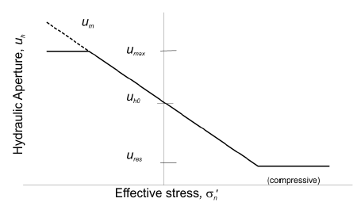
图 4：岩石节理水力开度与有效法向应力的理想化关系。本图有效压应力为正。
求解过程中，3DEC 每个力学时间步都会更新系统几何，获得全部接触的新开度，参阅“三维运动与相互作用的力学计算（Mechanical Calculations for Motion and Interaction in 3D）”。考虑开度上限 \(u_{max}\) 后，通过式 (6) 计算接触流量。
压力计算后存入称为流动节点的数据结构，见裂隙岩体的几何与拓扑模型（Geometrical and Topological Model of a Fractured Rock Mass）。计算流量后，考虑流入节点的净流量，以及周围块体增量运动可能引起的节点体积变化，更新节点压力。新压力为
其中：
\(p_0\) 为前一时间步的流动节点压力；
\(Q\) 为周围全部接触流入该流动节点的流量之和；
\(K_w\) 为流体体积模量；
\(\Delta V = V - V_0\)；以及
\(V_m = (V + V_0) / 2\)，其中 \(V\) 和 \(V_0\) 分别为新、旧流动节点体积。
如果式 (18) 计算的新域压力为负，则将其设为零，即不允许存在负压力。
饱和度
当前 3DEC 版本假定节理完全饱和，饱和度始终为一（1）。孔隙压力可为正或零（0），不允许负孔隙压力。
流体时间步长与数值稳定性
显式时间积分中，时间步长不能超过临界值。当前显式流动算法的数值稳定性，要求将流体时间步长 \(\Delta t_f\) 限制为
其中，\(V\) 为流动节点体积，渗透性因子 \(k_i\) 的求和覆盖其周围全部接触。
所有流动节点 \(\Delta t_f\) 的最小值，就是分析的临界时间步长。瞬态流动分析的数值稳定要求可能相当严格，使某些分析耗时过长或难以实施，尤其接触开度较大、流动节点体积很小时。此外，节理内流体还会使表观节理刚度增加 \(K_w / u_h\)，因而可能需要减小力学计算时间步长。对于显式算法，这意味着必须缩短力学时间步长。
式 (19) 计算的流体时间步长，与流体体积模量和节理导水能力成反比，而导水能力又与开度立方成正比。典型节理开度下，所得流体时间步长约为毫秒量级，因此该算法在实际问题中只能用于短历时模拟。实际分析中增大时间步长的讨论，见加快耦合模拟的建议（Tips for Speeding Up Coupled Simulations）。
流动分析的计算模式与命令
仅流体分析
可以模拟节理流动，同时不考虑流体压力对岩石变形的影响，以及岩体变形对流体扩散率的影响。这种分析称为“非耦合”或“仅流体”分析，因为比贮水量仅由流体可压缩性控制，假定岩体刚度为无穷大。
流动分析可以为瞬态，即时间重要，也可以为稳态，即仅需极长时间后的压力。在 3DEC 中，求解始终为瞬态。若需要稳态解，就持续运行瞬态问题，直到孔隙压力不再变化，此时认为达到稳态。注意，降低仅流动分析的流体体积模量不会加快计算；它虽增大时间步长，也会延长达到稳态所需时间。因此，对于稳态分析，\(K_w\) 的选择不重要。
瞬态分析中，选择 \(K_w\) 对获得正确时间尺度很重要。若采用真实流体体积模量，意味着岩体为刚性，完全忽略其变形性对扩散过程时间尺度的影响。但一定条件下，可通过降低流体体积模量，在仅流动模拟中考虑岩体变形性，即岩石变形对应的储水效应。这样无须运行有时很耗时的耦合模拟，也能得到正确时间尺度。饱和介质中压力传播速率由扩散率决定：
其中，\(k_H\) 为水力传导系数，单位为长度／时间；\(S\) 为贮水量，单位为 1／长度。忽略节理刚度时，节理饱和材料的贮水量可表示为
其中，\(u_h\) 为水力开度，\(s\) 为节理间距，\(K_w\) 为真实流体体积模量，\(K\) 和 \(G\) 分别为岩石体积模量和剪切模量。仅流体分析假定岩石刚性，因此式 (21) 第二项为零。为考虑岩石变形，可采用如下表观流体体积模量：
在仅流体分析中使用该值，可获得正确的贮水量式 (21)，从而获得正确扩散率式 (20) 和时间尺度。
要用 3DEC 求解流动问题，首先必须在模型设置开始时开启流动分析，以创建流动所需的附加数据结构；即流动配置命令 model config fluid 应先于全部其他命令。仅流体分析必须激活流体分析、停用力学分析（model fluid active on 和 model mechanical active off）。流体材料属性需给出密度、黏度和体积模量。节理材料属性仅需初始开度（\(u_{h0}\)），因为不进行力学计算，开度不会变化。但用户仍必须指定残余和最大开度，否则默认为零；可将二者设为与 \(u_{h0}\) 相同。单节理仅流动示例见 flow_only.3ddat。假定真实流体体积模量 2 GPa、节理间距 2 m，由式 (22) 计算表观流体模量。
节理流体压力与流量见图 5（Figure 5）。创建该图时，添加／／，以及／绘图项，再旋转视图查看节理平面。图 6（Figure 6） 显示节理中部压力演化，可见约 12 s 后达到稳态。
flow_only.3ddat
model new
model config fluid
model large-strain off
block create brick -1 1 -1 1 -1 1
block cut joint-set dip 0 dip-direction 90
block zone generate edgelength 0.25
block zone cmodel assign elastic
block zone property density 2500 shear 2e9 bulk 5e9
block contact jmodel assign mohr
block contact property stiffness-normal 1e10 stiffness-shear 1e10
block fluid property bulk 3.8e5
block fluid property density 1000
block fluid property viscosity 1e-3
flowplane vertex property aperture-initial 1e-4 aperture-minimum 1e-4 ...
aperture-maximum 1e-4
flowknot apply pore-pressure 5.0e6 range position-x -1
flowknot apply pore-pressure 0 range position-x 1
;
model his fluid time-total
flowknot history pore-pressure position 0 0 0
;
model fluid active on
model mechanical active off
model cycle 1000
;

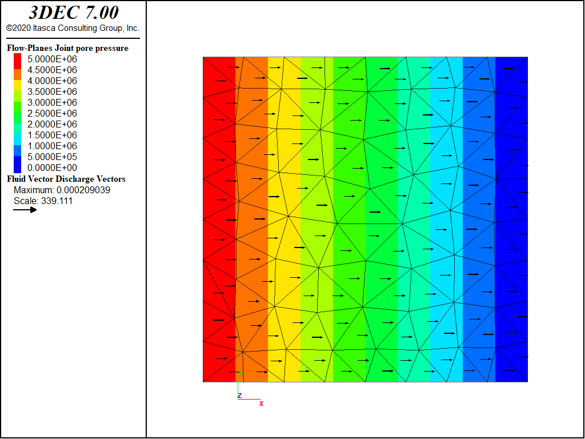
图 5：节理上的流体压力与流量矢量。

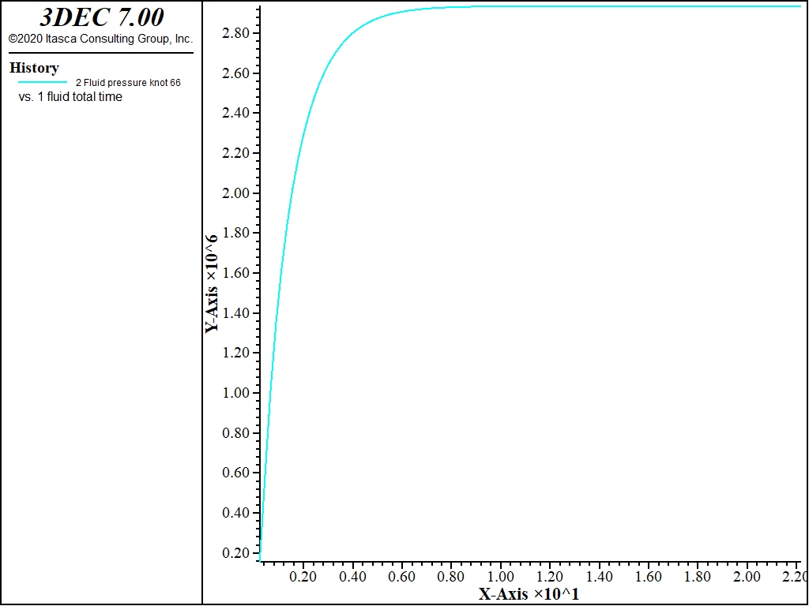
图 6：节理中部压力历史。
单向耦合
如果压力变化与力学变形弱耦合，即压力变化不会导致显著开度变化，尤其当不关注瞬态响应时，可依次执行仅流动和仅力学模拟，将问题视为单向耦合。
完成仅流动分析（仅流体分析（Fluid-Only Analysis））后，可开展流体压力变化影响力学行为的力学分析。流体压力变化改变节理有效应力，引起固体模型弹性和／或非弹性变形。有效应力用于计算节理破坏条件，因此流体压力改变导致的法向有效应力变化，会使节理应力状态相对于破坏面移动，如图 7（Figure 7） 所示。
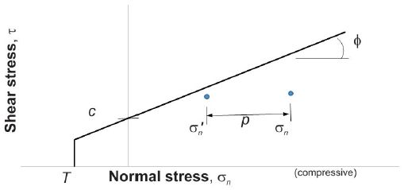
图 7：流体压力对具有黏聚力 \(c\) 和摩擦角 \(\varphi\) 的节理破坏包络线滑移条件的影响。
单向耦合分析需要与仅流体分析相同的属性，即流体体积模量、黏度和密度。与仅流动分析相同，残余和最大开度不重要，可设为与 \(u_{h0}\) 相同。
单向耦合分析需要以下步骤：
- 指定地应力状态与孔隙压力，并求解初始力学应力状态。为此需要令 \(K_w\) = 0，使流体压力不因岩石变形而改变。仅力学计算通过 model fluid active off' and :lcmd:`model mechanical active on 完成。
- 使用 flowknot apply pore-pressure、flowknot apply discharge 和 flowplane edge apply discharge 设置流体边界条件。默认边界不透水。
- 按仅流体分析（Fluid-Only Analysis）求解流体压力。使用 model fluid active on' and :lcmd:`model mechanical active off，并将流体体积模量设为式 (22) 的 \(K_w^a\)。
- 再次用 model fluid active off' and :lcmd:`model mechanical active on，并令 \(K_w\) = 0，求解流体压力对固体的作用。
下例中没有初始化孔隙压力。通常应初始化，且一般根据地下水位位置确定。示例创建含单条节理的模型，并在块体中建立 10 MPa 初始各向同性应力。随后左侧施加 11 MPa 流体压力，右侧压力保持零。压力变化引起的位移等值线见图 8（Figure 8）。
one_way.dat
model new
; 单向耦合模拟
model config fluid
model large-strain off
block create brick -1 1 -1 1 -1 1
block cut joint-set dip 0 dip-direction 90
block zone generate edgelength 0.25
block zone cmodel assign elastic
block zone property density 2500 shear 2e9 bulk 5e9
block contact jmodel assign mohr
block contact property stiffness-normal 1e10 stiffness-shear 1e10
block fluid property bulk 3.8e5
block fluid property density 1000
block fluid property viscosity 1e-3
flowplane vertex property aperture-initial 1e-4 ...
aperture-minimum 1e-4 aperture-maximum 1e-4
;
block gridpoint apply velocity-x 0 range position-x -1
block gridpoint apply velocity-x 0 range position-x 1
block gridpoint apply velocity-y 0 range position-y -1
block gridpoint apply velocity-y 0 range position-y 1
block gridpoint apply velocity-z 0 range position-z -1
block gridpoint apply velocity-z 0 range position-z 1
;
block insitu stress -1e7 -1e7 -1e7 0 0 0
model fluid active off
model mechanical active on
block fluid property bulk 0.0
model history mechanical unbalanced-maximum
model cycle 100
model fluid active on
model mechanical active off
;
flowknot apply pore-pressure 1.1e7 range position-x -1
flowknot apply pore-pressure 0.0 range position-x 1
;
block fluid property bulk 3.8e5
history delete
model his fluid time-total
flowknot history pore-pressure position 0 0 0
model cycle 1000
model fluid active off
model mechanical active on
block fluid property bulk 0.0
model cycle 1000
program return

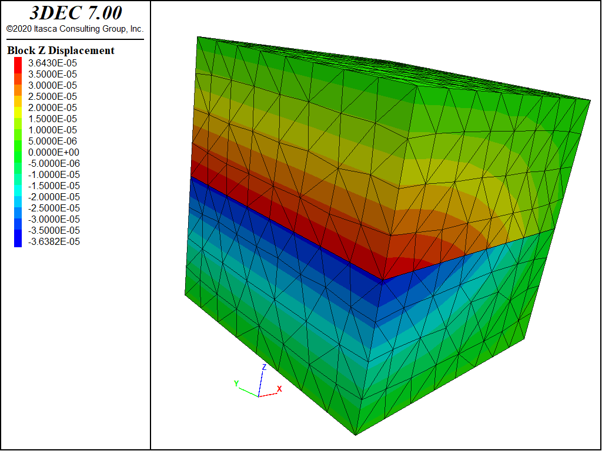
图 8：单向耦合分析后块体中的 \(z\) 位移。
不排水
前例为单向耦合，因为流体压力影响变形，但初始应力设置后，固体位移不影响流体压力。另一种简化耦合情况是，变形不是由扩散引起的孔隙压力变化产生，而是由较短时尺度上的力学加载引起，因而可忽略孔隙压力扩散。这通常称为不排水变形。
不排水分析需要以下步骤：
- 像单向耦合情况一样设置初始应力和孔隙压力。
- 为 \(u_{res}\) 指定真实值，因为节理开度影响变形引起的孔隙压力变化。
- 将流体体积模量设为真实值，例如 2 GPa。使用 model fluid active off' and :lcmd:`model mechanical active on 进行力学计算。孔隙压力随节理开度变化，如式 (18) 第三项所示。
下例将初始应力和孔隙压力初始化为零，然后在试样顶部施加应力，节理孔隙压力相应增加。随后剪切节理，展示孔隙压力对抗剪强度的影响。
节理中产生的流体压力见图 9（Figure 9），总体接近 1 MPa，表明所施加力学应力由流体承担。剪切期间块体 \(x\) 位移见图 10（Figure 10）。由于断层有效法向应力接近零，便于滑移，剪切期间节理平面的剪应力可忽略。
undrained.dat
; 不排水变形
model new
model config fluid
model large-strain off
;
block create brick -1 1 -1 1 -1 1
block cut joint-set dip 0 dip-direction 90
block zone generate edgelength 0.25
block zone cmodel assign elastic
block zone property density 2500 shear 2e9 bulk 5e9
block contact jmodel assign mohr
block contact property stiffness-normal 2e9 stiffness-shear 2e9 ...
friction 30. tension 1e30
block fluid property bulk 2.e9
block fluid property density 1000
block fluid property viscosity 1e-3
flowplane vertex property aperture-initial 1e-4 ...
aperture-minimum 1e-15 aperture-maximum 1
;
block gridpoint apply velocity-x 0.0 range position-x -1
block gridpoint apply velocity-x 0.0 range position-x 1
block gridpoint apply velocity-y 0.0 range position-y -1
block gridpoint apply velocity-y 0.0 range position-y 1
block gridpoint apply velocity-z 0.0 range position-z -1
;
; 假定原位应力为 0，在顶部施加应力。
block face apply stress 0 0 -1e6 0 0 0 range position-z 1
;
model fluid active off
model mechanical active on
model cycle 5000
model save 'undrained-load'
;
; 施加剪切
block gridpoint apply-remove velocity-x range position-x -1.1 1.1
block gridpoint apply velocity-x 0.01 velocity-z 0.0 range position-z 0.1 1.1
block gridpoint apply velocity-x 0.0 range position-z -1
block contact history stress-shear position 0 0 0
block gridpoint initialize displacement 0 0 0
model cycle 5000
program return

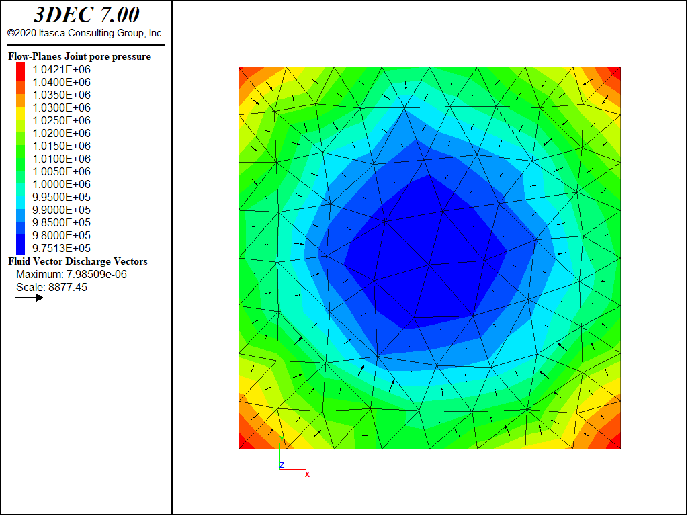
图 9：不排水条件加载后节理上的孔隙压力。

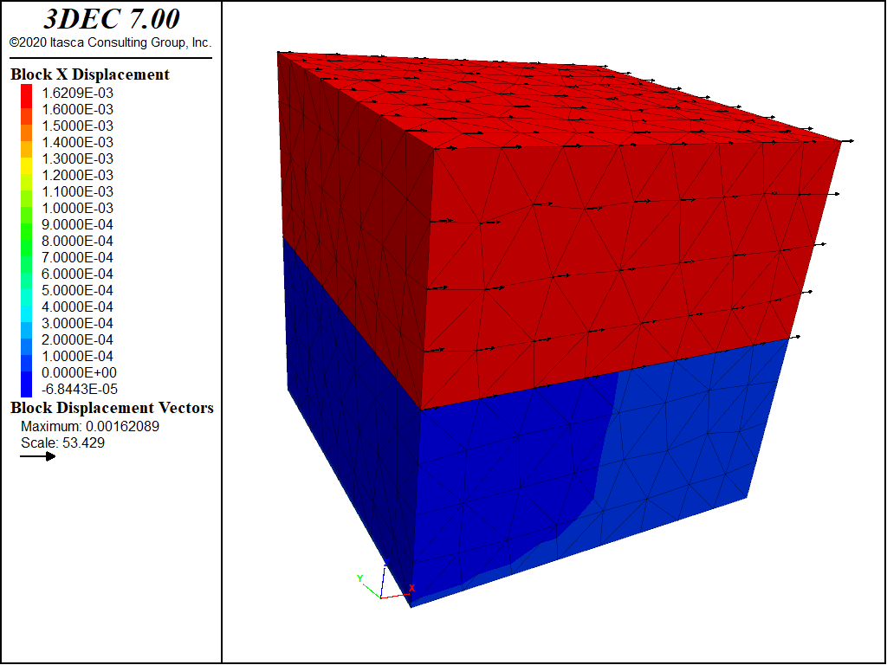
图 10：块体中的 \(x\) 位移。
完全耦合水力—力学模拟
许多情况下需要完全耦合水力—力学模拟，例如流体压力变化引起的固体变形，使开度变化相对于初始开度很大。此时固体变形影响流体压力，流体压力也影响力学应力和应变。求解通过频繁交替力学与流体计算完成。用户可控制每个流体步执行的力学步数，反之亦然，见下文。
以下小节概述完全耦合分析所需步骤。
流体属性的定义
分析需要的流体材料属性为密度、黏度和体积模量，命令分别为 block fluid property density、block fluid property viscosity 和 block fluid property bulk。节理水力属性必须指定 aperture-initial、aperture-minimum 和 aperture-maximum，分别表示零应力开度、残余开度和最大水力开度，使用 flowplane property 命令设置。
求解初始状态
首先通过 block insitu 命令指定原位应力和孔隙压力。求初始状态时，先激活力学模式、关闭流动（model fluid active off' and :lcmd:`model mechanical active on），并将流体体积模量设为 0（block fluid property bulk 0），确保求解应力时流体压力不变。平衡后关闭力学模式、开启流动（model fluid active on' and :lcmd:`model mechanical active off），恢复真实流体体积模量，再步进至平衡，获得初始稳态压力。初始化目标是在模型中建立平衡应力与稳态压力。这一步产生的位移通常无实际意义，即并非实际物理过程的结果，因此获得初始状态后应重置位移（block gridpoint initialize displacement 0 0 0 和 block contact reset displacement）。
使用 block insitu 设置应力时，可采用 nodisplacement 关键字。nodisplacement 防止从 aperture-initial，即零应力水力开度，中减去初始应力导致的法向位移。因此 azero 将表示初始开度，而非零应力开度。
运行耦合求解
运行耦合求解时，力学和流动模式必须同时开启。3DEC 内部先运行一系列力学步，再运行一系列流体步。用户可设置每个流体步对应的力学步数，以及每个力学步对应的流体步数。
大多数情况下，力学变形时间远短于流动时间。事实上，3DEC 水力—力学耦合模型假定准静态，即力学模型针对当前孔隙压力分布保持平衡。因此，虽然流动与力学模型均显式时间积分，只有流动时间才是物理时间。两模型无须同步；每个流体时间步，只需执行足够多力学步达到平衡。最大不平衡力低于给定阈值时视为平衡。默认阈值为 1 × 10−5，可通过 model solve 命令中的 mechanical ratio maximum 关键字修改。
每个流体步都达到不平衡力阈值有时非常耗时，因此也可指定每个流体步最多执行的力学循环数。使用 model mechanical slave on 和 model mechanical substep 200，将两流动步之间的最大力学循环数设为 200，不论不平衡力大小。如果力学模型在少于 200 步时已平衡，实际执行步数可以更少。该命令仅防止每个流体步执行过多力学步。
某些情况下，尤其模型初始扰动经过很长时间后，单个流体步内的压力变化和力学扰动可能很小。此时每个流体步执行一个或多个力学步可能没有必要且低效。可使用 model fluid slave on 和 model fluid substep n，将每个力学步最多执行的流体步数设为 n，默认值为 1。
示例
下例与单向耦合示例类似，但改为完全耦合水力—力学模拟。
运行后可见执行了超过 500,000 步，因为每个流体步都执行多个力学步，文件指定共 20,000 个流体步。总物理时间仅约 0.047 s。图 11（Figure 11） 显示节理压力等值线，与图 5（Figure 5） 比较可知尚未达到稳态，压力仍在变化。节理开度等值线见图 12（Figure 12），添加／／绘图项即可生成。最后，块体位移等值线见图 13（Figure 13），表明块体随流体压力变化而变形，模型确实为耦合。
coupled.dat
; 完全耦合分析
model new
model config fluid
model large-strain off
block create brick -1 1 -1 1 -1 1
block cut joint-set dip 0 dip-direction 90
block zone generate edgelength 0.25
block zone cmodel assign elastic
block zone prop density 2500 shear 2e9 bulk 5e9
block contact jmodel assign mohr
block contact property stiffness-normal 1e10 stiffness-shear 1e10
block fluid property bulk 2e9 density 1000 viscosity 1e-3
flowplane vertex property aperture-initial 1e-4 ...
aperture-minimum 1e-5 aperture-maximum 1e-3
block gridpoint apply vel-x 0.0 range pos-x -1.0
block gridpoint apply vel-x 0.0 range pos-x 1.0
block gridpoint apply vel-y 0.0 range pos-y -1.0
block gridpoint apply vel-y 0.0 range pos-y 1.0
block gridpoint apply vel-z 0.0 range pos-z -1.0
block gridpoint apply vel-z 0.0 range pos-z 1.0
block insitu stress -1e7 -1e7 -1e7 0 0 0 nodis
block insitu p-p 2e6
; 初始平衡，力学部分
model fluid active off
block fluid property bulk 0.0
model hist mech unbal-max
model cyc 100
; 初始平衡，流体部分
model fluid active on
model mech active off
block fluid property bulk 2e9
model cyc 100
block gridpoint ini disp 0 0 0
block contact reset disp
flowknot apply p-p 3.0e6 range pos-x -1.0
flowknot apply p-p 2.0e6 range pos-x 1.0
model mech active on
block fluid property bulk 2e8
model mechanical substep 10
model mechanical slave on
history delete
model his fluid time-total
flowknot his p-p pos 0 0 0
model solve fluid cycles 20000 or mechanical ratio 1e-5
model save "coupled"

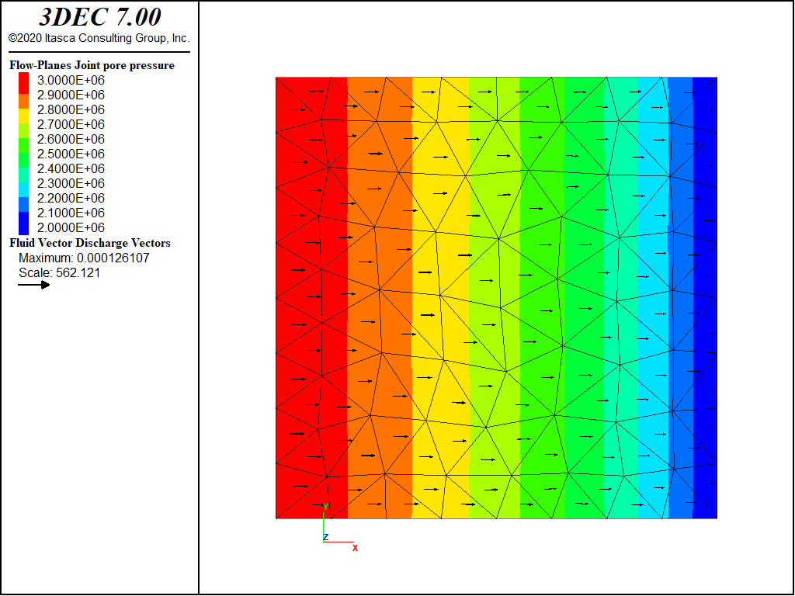
图 11：耦合模型 20,000 步后的流体压力。

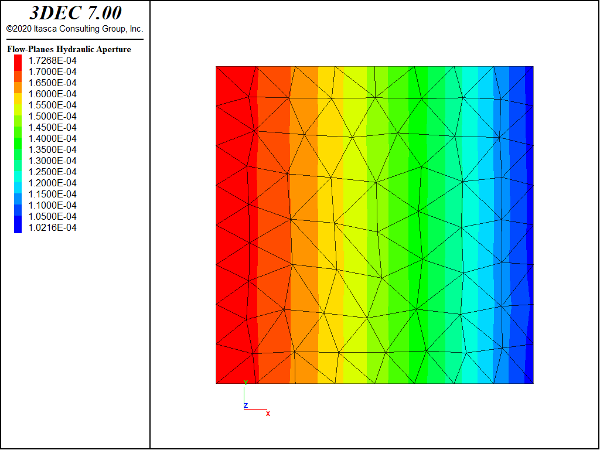
图 12：耦合模型 20,000 步后的节理开度。
快速流动
程序提供快速流动选项，加快耦合计算。该选项假定流体不可压缩。当岩石相对于流体并不很刚硬，或开度很小时，这可能是合理假设。回顾饱和节理表观刚度为 \(K_w / u_H\)，因此小开度会产生大表观刚度，可能可将其近似为无穷大，即节理内流体不可压缩。
通过 block fluid fast-flow active on 命令开启快速流动。注意，该逻辑通常产生大得多的流体时间步长，因此可能需增大 model mechanical substep，确保每步近似达到力学平衡。
快速流动还需要不同的流体体积模量输入。由于假定流体不可压缩，输入的不是实际流体模量，而是材料体积模量除以网格单元尺寸立方，即 K/edge3。启用 fastflow 时，通过 block fluid bulk property < value > 输入该量，其国际单位制量纲为 Pa/L3。模型材料属性和网格尺寸变化时，应采用该参数的最大值。
将“coupled.dat”修改为“coupled-fast.dat”，以使用快速流动逻辑，需要以下改变：
- 将流体体积模量设为固体体积模量除以网格单元尺寸立方。
- 每个流体步允许的力学步数增加至 2000。
- 流体时间步长限制为最大 1e-3 s。
如果不限制流体时间步长，初始值会很大，产生较大的初始压力脉冲和不稳定行为。限制为 1e-3 s 后，时间步长仍约为未采用快速流动示例的 1000 倍，因此仅需约 200 个流体步达到稳态，总步数约 50,000，明显少于上述普通流动版本。
coupled-fast.dat
; 采用快速流动算法的完全耦合分析
; 完全耦合分析
model new
model config fluid
model large-strain off
block create brick -1 1 -1 1 -1 1
block cut joint-set dip 0 dip-direction 90
block zone generate edgelength 0.25
block zone cmodel assign elastic
block zone prop density 2500 shear 2e9 bulk 5e9
block contact jmodel assign mohr
block contact property stiffness-normal 1e10 stiffness-shear 1e10
flowplane vertex property aperture-initial 1e-4 ...
aperture-minimum 1e-5 aperture-maximum 1e-3
block fluid property bulk 2e9 density 1000 viscosity 1e-3
block gridpoint apply vel-x 0.0 range pos-x -1.0
block gridpoint apply vel-x 0.0 range pos-x 1.0
block gridpoint apply vel-y 0.0 range pos-y -1.0
block gridpoint apply vel-y 0.0 range pos-y 1.0
block gridpoint apply vel-z 0.0 range pos-z -1.0
block gridpoint apply vel-z 0.0 range pos-z 1.0
block insitu stress -1e7 -1e7 -1e7 0 0 0 nodis
block insitu p-p 2e6
; 初始平衡，力学部分
model fluid active off
block fluid property bulk 0.0
model hist mech unbal-max
model cyc 100
; 初始平衡，流体部分
model fluid active on
model mech active off
block fluid property bulk 2e9
model cyc 100
block gridpoint ini disp 0 0 0
block contact reset disp
flowknot apply p-p 3.0e6 range pos-x -1.0
flowknot apply p-p 2.0e6 range pos-x 1.0
block fluid fast-flow active on
model mech active on
block fluid property bulk [2e9/0.25^3]
model mechanical substep 2000
model mechanical slave on
history delete
model his fluid time-total
flowknot his p-p pos 0 0 0
model fluid timestep max 1e-3
model solve fluid cycles 250 or mechanical ratio 1e-6
model save "coupled-fast"
滤失
开启基质流体流动后，可以模拟流体从节理向相邻岩块的运移（滤失）。通过指定 model configure matrixflow，节理流动与基质流动将同时开启。基质中每个网格点位置都会生成流动节点。在流动平面位置处，一个流动节点代表两个（或多个）重合的网格点，从而使节理流动与基质流动相连。
下例仅进行流体计算，没有流固耦合。因此，将基质中流体体积模量设为式 (22) 计算的表观模量。如果未通过 block fluid property bulk-matrix 指定基质流体体积模量，则采用与节理流体相同的值，后者由 block fluid property bulk 给出。
第一个示例将基质渗透系数设为 1×10−6 m/s。1.5 s 后孔隙压力见图 14（Figure 14），可见流体已从裂隙进入基质。图 15（Figure 15） 为相同示例，但基质渗透系数设为 1 × 10−8 m/s。此时流体进入基质的距离较短，因此沿节理流得更远。


leakoff-1.dat
program log on
program log-file 'leakoff-1.log'
; --------------------------------------------------------
; leakoff-1 ... 岩石基质水力传导系数 1e-6 m/s
; --------------------------------------------------------
;
model new
model config matrixflow
model large-strain off
;
block create brick -5 5 -0.5 0.5 -5 5
block cut joint-set
;
block zone generate edgelength 1.0
block zone cmodel assign elastic
block zone property density 2500 shear 1e9 bulk 2.5e9
block contact jmodel assign mohr
block contact property stiffness-normal 1e11 stiffness-shear 1e11
flowplane vertex property aperture-initial 2e-4 ...
aperture-minimum 2e-4 aperture-maximum 2e-4
block fluid property bulk 2e9 density 1000 viscosity 1e-3
; perm = (1e-6 m/s) / (rho*g) = 1e-10
block zone fluid property permeability 1e-10
block zone fluid property porosity 0.10
;
block insitu stress 0 0 -1e6 0 0 0
;
block gridpoint apply velocity-x 0 velocity-y 0 velocity-z 0 ...
range position-z -5
;
flowknot history pore-pressure position -5 0 0
flowknot history pore-pressure position -2 0 0
flowknot history pore-pressure position 0 0 0
flowknot history pore-pressure position 2 0 0
flowknot history pore-pressure position -2 0 5
flowknot history pore-pressure position 0 0 5
flowknot history pore-pressure position 2 0 5
flowknot history pore-pressure position -2 0 -5
flowknot history pore-pressure position 0 0 -5
flowknot history pore-pressure position 2 0 5
flowknot history pore-pressure position -5 -1 0
flowknot history pore-pressure position -5 1 0
flowknot history pore-pressure position -3 -1 0
flowknot history pore-pressure position -3 1 0
flowknot history pore-pressure position -5 -1 1
flowknot history pore-pressure position -5 1 1
flowknot history pore-pressure position -5 -1 -1
flowknot history pore-pressure position -5 1 -1
;
; 仅进行流体分析时，计算表观流体体积模量
fish define kf_matrix
local poros_ = 0.1
local rockbulk_ = 2.5e9
local shear_ = 1e9
local fluidbulk_ = 2e9
kf_matrix = poros_/(poros_/fluidbulk_ + 1.0/(rockbulk_+4.0/3.0*shear_))
end
block fluid property bulk-matrix [kf_matrix]
;
flowknot apply pore-pressure 1e6 range position-x -5 position-z 0
flowknot apply pore-pressure 0.0 range position-x 5 position-z 0
;
model fluid active on
model mechanical active off
model solve fluid time-total 1.5
;
flowknot list range pos-z -0.1 0.1
;
model save 'leakoff-1'
模型优化的考虑因素
根据前节讨论，水力—力学耦合模型的特征，使建模人员面对以下两个不同困难：
- 由于开度较小，困在节理中的流体表现得很刚硬。换言之，充液节理表观刚度由 \(K_w / u_h\) 决定，该项往往因开度相对较小而很大，导致力学和流动时间步长很小。
- 由于流动方程包含开度立方项，渗透性对开度非常敏感。因此，开度增加会使流体时间步长急剧减小。
下面分别处理这两个困难。
流体体积模量过大的问题在于：通常问题扩散率由岩体变形性控制，即流体体积模量并不影响问题物理本质；但它参与时间步长计算，导致极小时间步长。为减轻这一问题，建议降低流体体积模量。例如，20° 时水的体积模量约为 2.2 GPa，考虑典型节理开度，充水节理表观刚度会比岩石高许多数量级。如果模型存在这种刚度反差，建议降低流体体积模量，使充液节理表观刚度近似等于相邻岩石块体网格单元的等效刚度。
局部的大位移会显著减小流体时步。在流量计算中对张开度取上限 aperture-maximum，可以在不影响所分析问题物理实质的前提下，避免过大张开度对时步的影响。不过建议所取最大张开度不要影响流动模型中相当大一部分区域的张开度。
加快耦合模拟的建议
除快速流动之外，还可通过以下方法加快耦合计算：
- 减小 model mechanical substep，或增大 mechanical ratio，都可能减少每个流体步执行的力学步数。但也应避免减少过多，否则块体不能正确响应流体压力变化而变形。
- 使用 flowplane area-minimum 命令设置最小允许流动平面面积。离散时可能在流动平面内形成面积远小于平均值的极小网格单元，使流体时间步长大幅减小。如果这种单元数量较少，可赋予其 area-minimum，即计算时按面积等于 area-minimum 处理，在较小影响问题物理性质的情况下显著增大时间步长。但若 area-minimum 影响模型中大量单元，说明参数选择不当，会影响所模拟问题的物理性质。为确定 area-minimum，可编写 FISH 函数生成流动平面面积直方图，再选取截断最小值的合适阈值，例如低于均值两个标准差。
- 使用 flowknot volume-minimum 设置最小流动节点体积。块体几何生成和／或离散过程中，可能产生远小于平均体积的节点，显著影响流体时间步长。如果这类小体积节点数量较少，可赋予其 volume-minimum，即计算时按体积等于 volume-minimum 处理，在较小影响物理性质的情况下显著增大时间步长。但若 volume-minimum 影响模型中大量节点，则参数选择不当，会改变问题物理性质。为确定 volume-minimum，可编写 FISH 函数生成流动节点体积直方图，再选择截断最小值的合适阈值，例如低于均值两个标准差。
- 用 flowplane zone edge-minimum 命令设置流动单元的最小边长。所有边长小于该值的单元都会（带标记地）“停用”。它们不会被删除，用户以后可以修改该最小值（或将其设为零以恢复标准逻辑）。通过停用极小的边，时步会如前所述增大。
用于流动模拟的离散裂隙网络（DFN）表示
岩体离散裂隙通常由地质历史不同时期的荷载作用形成。裂隙一般呈平面且范围较大，可识别为若干特定组，各组具有特征方位和间距。不可能完全了解整个裂隙网络几何，因此许多裂隙模型采用随机方式。根据可观测量计算网络统计属性，再生成随机裂隙场。这类模型严格为三维，因为二维和三维连通性质无法简单尺度转换。更多信息见DFN 概述（DFN overview）。
虽然 3DEC 块体几何限制不允许块体仅部分破裂，但可通过为两块体接触面内的子接触赋予变化属性，达到类似效果。例如，节理平面一部分赋予较高强度，表现为“岩桥”或完整岩石；另一部分赋予摩擦面强度，表现为岩石节理或弱面。裂隙可表示为圆盘或多边形。
对于每条裂隙，一个节理平面将切穿所有与其相交的块体。由于 3DEC 不允许部分破裂块体，裂隙对应的节理平面会延伸至有关块体边界，见图 16（Figure 16）。
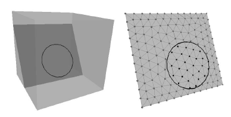
图 16：为节理平面上圆形裂隙内部（黑色）与外部（灰色）子接触赋予不同属性的示意图。
切割后，3DEC 不区分裂隙与节理平面。要定义特定形状裂隙，还需要第二步。完成块体生成并离散为四面体网格后，通过赋予不同材料属性，区分节理平面的破裂与未破裂部分，见 Section 6.6 in the User’s Guide。CS：见前一个标记——相同思路。
默认所有节理平面均可流动，但现实中流动只能通过裂隙，因此需阻止未破裂部分流动。可通过 block fluid crack-flow on 开启 3DEC 的 crackflow 选项，使流动仅发生于节理平面中已剪切或拉伸屈服的部分。启用后，为允许 DFN 内流动，应将裂隙内子接触破坏指示值设为 1，表示已经破坏，未破裂子接触的指示值则设为零。
“dfn.dat”演示此方法。在 2 m × 2 m 块体中创建直径 0.5 m 的水平圆形裂隙，将内部子接触设为“已裂开”以允许流动。初始子接触状态见图 17（Figure 17）。随后从中心注入流体并执行 10,000 步。注入后子接触状态见图 18（Figure 18），可见初始裂隙已扩展。压力和开度分别见图 19（Figure 19） 和图 20（Figure 20）。
dfn.dat
model new
model random 10000
model config fluid
model large-strain off
block create brick -1 1 -1 1 -1 1
;
; 创建单条圆形裂隙
model domain extent -1 1 -1 1 -1 1
fracture create dip 0 size 1 dfn 'simple'
block cut dfn name 'simple'
;
block zone generate edgelength 0.15
block zone cmodel assign elastic
block zone property density 2500 shear 2e9 bulk 5e9
block contact jmodel assign mohr
; 裂隙外部
block contact property stiffness-normal 1e10 stiffness-shear 1e10 ...
friction 30 cohesion 10000 tension 1000
; 裂隙内部
block contact property stiffness-normal 1e10 stiffness-shear 1e10 ...
friction 30 range dfn-3dec 'simple'
;
block gridpoint apply velocity 0 0 0 range position-x -1
block gridpoint apply velocity 0 0 0 range position-x 1
block gridpoint apply velocity 0 0 0 range position-y -1
block gridpoint apply velocity 0 0 0 range position-y 1
block gridpoint apply velocity 0 0 0 range position-z -1
block gridpoint apply velocity 0 0 0 range position-z 1
;
block fluid property bulk 2e8 density 1000 viscosity 1e-3
flowplane vertex property aperture-initial 1e-4 ...
aperture-minimum 1e-4 aperture-maximum 1e-3
;
; 启用裂隙流动，并将裂隙内部子接触设为“开裂”
block fluid crack-flow on
;
fish define crack_frac
loop foreach cx block.subcontact.list
if block.subcontact.fid(cx) # 0 then
block.subcontact.state(cx) = 2 ; 将状态设为“拉伸破坏”
endif
end_loop
end
[crack_frac]
;
model save 'dfn_initial'
;
; 在中心注入
flowknot apply discharge 0.0001 range position-x -0.1 0.1 position-y -0.1 0.1
;
model history fluid time-total
flowknot history pore-pressure position 0 0 0
;
model fluid active on
model mechanical active on
model mechanical substep 200
model mechanical slave on
model solve fluid cycle 500 or mech ratio 1e-3
;

图 17：注入前子接触状态。

图 18：注入 17 ms 后的子接触状态。

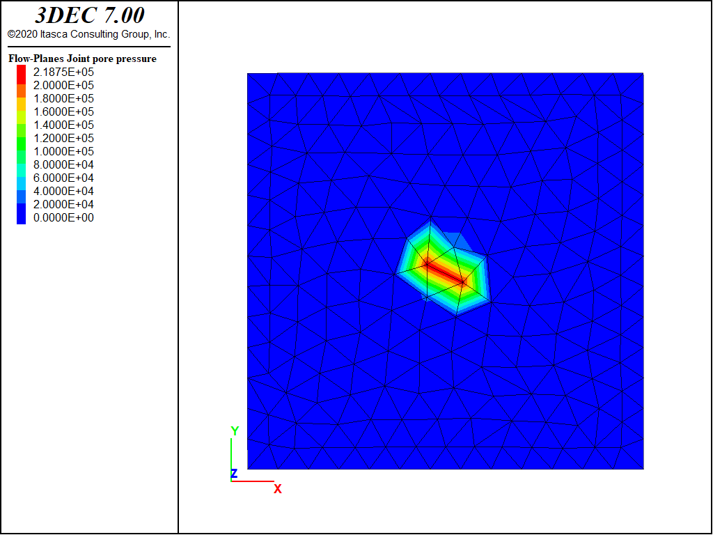
图 19：注入 17 ms 后的压力和流量矢量。

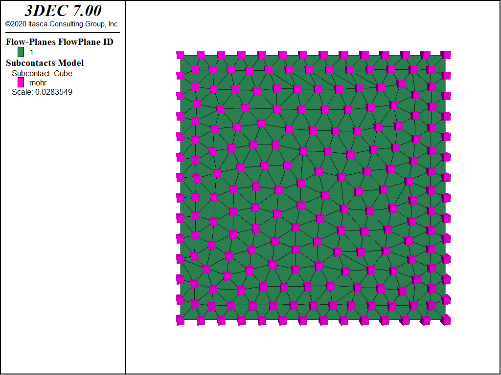
图 20：注入 17 ms 后的节理开度。
裂隙岩体的几何与拓扑模型
引言
如前述，3DEC 将岩体流动简化为裂隙网络中的流动，裂隙由分隔块体的节理形成。3DEC 模型几何是通常非常复杂的岩石内部结构的简化形式。3DEC 假定岩石节理为平面，这一假定往往接近实际，并显著简化固体块体几何及其相互作用。此外，3DEC 节理始终延伸到块体边界。实际节理尺寸有限，整体通常呈节理平面内的椭圆形。为避免部分破裂块体，3DEC 假定节理无限延伸，或恰好终止于另一节理平面。因此，用节理“切割”实体后，模型只由凸多面体组成。模拟有限节理的一种方法，见用于流动模拟的 DFN 表示（Representation of a DFN for Fluid Flow Simulations）。
3DEC 几何实体
3DEC 用以下若干简单几何元素表示岩石块体和裂隙。
3DEC 块体对应完整岩块，只能为凸多面体。每个表面为平面多边形，称为面；两面交线为边；两条线交点为顶点。块体基本几何元素为面 F、边 E 和顶点 V。
流动平面是流动模型的主要几何元素，是流动发生在其厚度范围内的二维平面；流动方程沿薄平面接触面的厚度或开度积分。流动平面是 3DEC 流体数据结构中的元素，对应固体模型两个多面体块体间的面—面接触，见图 4（Figure 4）。注意，3DEC 接触属于固相计算数据结构。换言之，同时存在流动平面与面—面接触这两个几何实体，并非由于物理差异，而是为了将流体与固相信息和计算分别放在两个数据结构中。
固体块体为平面面构成的多面体，因此流动平面为平面多边形。流动平面沿直线段边相连，同一条线上可连接两个以上流动平面。这条连接线称为流动管道。
流体流动数据结构
流动模型的几何元素包括：
- 流动平面——对应固体块体间面—面接触的平面多边形
- 流动平面网格单元——流动平面的三角形离散单元
- 流动平面顶点——流动平面网格单元顶点，通常对应固体块体间子接触
- 流动平面边——定义流动平面周边各段的直线
- 流动平面边分段——流动平面边的子段
- 流动管道——一个或多个流动平面的交线
- 流动管道顶点——流动管道的端点
- 流动管道分段——流动管道的子段
- 流动节点——除流动平面交线处外，与流动平面顶点相同；交线处一个流动节点对应相交流动平面上两个或更多位置重合的顶点。流动节点存储流体压力。
部分元素的图形表示见图 21（Figure 21）。
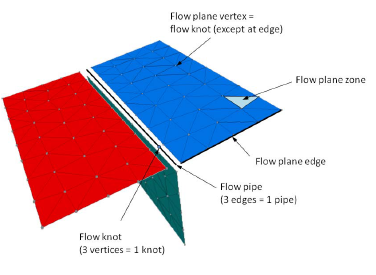
图 21：三个流动平面相交时的流动结构。流动平面实际相连，为便于观察采用分解显示。
数据结构中元素双向层级和邻接关系见图 22（Figure 22）。竖直箭头表示层级关系，水平箭头表示邻接关系。虚线箭头为指向所示元素列表或循环链表的指针。
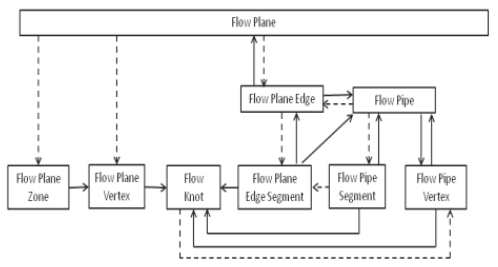
图 22：流动模型几何表示的数据结构连接。
访问流动平面数据
可通过 loop foreach 遍历流动平面、顶点、网格单元或流动节点，示例见“get_pressures.fis”。也可通过 flowknotknot.near 获取最接近某位置的单个流动节点指针。如图 22（Figure 22） 所示，流动平面位于结构层级顶部。除了用 loop foreach 遍历整个模型全部流动平面网格单元或顶点，也可遍历某特定流动平面的全部网格单元或顶点，见“flowzones.fis”。
图 22（Figure 22） 中，虚线箭头表示上层结构包含指向下层结构链表的指针，例如流动平面含有指向网格单元链表的指针。实线箭头表示指向对应对象单个实例的指针，例如流动平面边指向其所属流动平面。请注意以下例外：
- 每个流动平面指向流动平面边列表，该列表为双向链表，可双向遍历循环。末元素连接首元素，本质上是无限循环。因此，遍历流动边时必须谨慎，如“test_pipe.fis”所示。
- 流动管道指向两个管道顶点，代表两端点。
- 流动管道分段指向两个流动节点，分别位于分段两端。
下面给出三个示例。“get_pressures.fis”假定某流动平面包含沿 \(x\) 轴的一条线，并输出沿线流动节点的压力。
“flowzones.fis”展示如何遍历特定流动平面相关的流动网格单元。
“test_pipe.fis”输出全部流动管道顶点坐标，需要“FLOW.FIN”。由于遍历全部流动平面边来获取管道，可能有重复。流动平面相交时，两条或更多平面边会指向同一管道，见图 21（Figure 21）。
get_pressures.fis
; 用于输出沿 x 轴压力的函数
fish define get_pressures
; 遍历渗流节点
loop foreach local knot flowknot.list
local coord = flowknot.pos(knot)
if math.abs(comp.z(coord)) < 0.01
if math.abs(comp.y(coord)) < 0.01
local pressure_ = flowknot.pp(knot)
local status = io.out('x: ' + string(comp.x(coord)) + ...
' pp: ' + string(pressure_))
endif
endif
end_loop
end
flowzones.fis
; 用于输出 id 为 1 的渗流平面内渗流单元形心的函数
fish define get_flowzones
; 遍历渗流平面
loop foreach local fp flowplane.list
if flowplane.id(fp) = 2
; 遍历该渗流平面中的全部渗流单元
loop foreach local fz flowplane.zonelist(fp)
local status = io.out(string(flowplane.zone.pos(fz)))
end_loop
endif
end_loop
end
test_pipe.fis
;
; 用于输出渗流管道顶点坐标的函数
program call 'FLOW.FIN'
fish define test_pipe
loop foreach fp flowplane.list
local status = io.out('flow plane: '+string(fp))
; 获取渗流平面的索引，以直接访问内存
local fp_index = flowplane.index(fp)
local fpe_start = memory.fortran.index(fp_index+$klcor) ; 渗流平面的边
local fpe = fpe_start
loop while fpe # 0
status = io.out(' flow plane edge '+string(fpe))
local fpp = memory.fortran.index(fpe+$kpip) ; 渗流管道
status = io.out(' flow pipe: '+string(fpp))
if fpp # index(9999) ; 已连接
local fppv_left = memory.fortran.index(fpp+$kpleft)
local fppv_right = memory.fortran.index(fpp+$kpright)
local outstring = ' left vertex: ' + ...
string(memory.fortran.float(fppv_left+$kxyz))
outstring = outstring + ',' + ...
string(memory.fortran.float(fppv_left+$kxyz+1))
outstring = outstring + ',' + ...
string(memory.fortran.float(fppv_left+$kxyz+2))
status = io.out(outstring)
outstring = ' right vertex: ' + ...
string(memory.fortran.float(fppv_right+$kxyz))
outstring = outstring + ',' + ...
string(memory.fortran.float(fppv_right+$kxyz+1))
outstring = outstring + ',' + ...
string(memory.fortran.float(fppv_right+$kxyz+2))
status = io.out(outstring)
end_if
fpe = memory.fortran.index(fpe + $knfe)
if fpe = fpe_start
exit loop
end_if
end_loop
end_loop
end
固体模型与流动模型之间的联系
流动数据结构与固体模型通过以下关系连接：
- 流动平面与对应的固体块体面—面接触。使用 block.contact.flowplane 从接触访问流动平面，使用 flowplane.contact 从流动平面访问接触。
- 流动平面顶点与对应的固体块体子接触。每个不在平面边上的子接触，均通过 block.subcontact.flowplane.vertex 连接流动平面顶点；每个不在边上的顶点，也通过 flowplane.vertex.subcontact1 连接相应子接触。某些情况下，边上单个顶点位于两个子接触之间，第二个子接触由 flowplane.vertex.subcontact2 给出，两个子接触权重由 flowplane.vertex.weight1 和 flowplane.vertex.weight2 给出。
生成流动模型几何体
流动模型几何根据固体模型几何，即块体形状及其拓扑关系自动生成，无须用户交互。流体数据结构主要出于计算需要建立。实际流动路径是由块体间张开空间定义的裂隙。
气体流动
3DEC 也可模拟可压缩气体通过节理的瞬态流动。算法基于可压缩流体流动算法，并作以下修改。气体流动必须考虑密度对压力的强烈依赖；处理微可压缩流体时通常可忽略这种依赖，当前 3DEC 的做法即如此。
对于理想气体，可考虑等温条件下的流动，此时
也可考虑绝热流动，此时
其中，\(\rho\) 为密度，\(p\) 为压力，\(B\) 和 \(\gamma\) 为常数，见 Chan 等（1993）。
因此，气体体积模量也是压力的函数。等温情况下，由式 (23) 得到体积模量
绝热情况下为
密度依赖压力，要求流体质量平衡中考虑密度空间变化：
其中，\(n\) 为孔隙率。与 3DEC 现有微可压缩流体逻辑不同，气流分析需考虑式 (27) 第二项中密度梯度产生的对流项。
实现
3DEC 不连续面流动模型，将流动平面离散为三角形流动网格单元，假定单元内压力线性变化、流量均匀。在流动平面顶点即节点处建立质量平衡，考虑包含该节点的全部单元贡献。每个时间步节点压力更新可表示为
求和覆盖包含该节点的全部三角形流动网格单元。三角形单元密度取其三个节点密度的平均：
式 (28) 中，单元平均密度 \(\rho_{im}\) 与原域密度 \(\rho\) 的比值，考虑气体密度空间变化；水流情况下没有该因子。各域密度和体积模量根据式 (23) 至 (26)，作为域压力函数更新。
示例
Chan 等（1993）给出瞬态一维气流问题的解，描述理想气体从节理排入空腔时的压力时间演化。条件为半无限域中恒定体积下沿节理一维流动。\(x\) = 0 处气压 \(p\) = 0；在 \(x = \infty\) 处，气压设为 \(p_1\)。
作者给出近似解析解，以及采用隐式时间推进方案所得数值解的经验拟合。沿节理气压近似解析解为：
他们还给出数值解的经验拟合：
式 (30) 和 (31) 中，无量纲参数为 \(\Psi = p^2 / p_1^2\) 与 \(\xi = \sqrt{{(\nu n x^2)} / {(t k p_1)}}\)，其中 \(\nu\) 为气体剪切黏度，\(n\) 为孔隙率，\(k\) 为渗透率，\(t\) 为时间。将这些解写成 FISH 函数，结果存表以与 3DEC 比较。该 FISH 函数 解析解 FISH 函数（fppan） 如下。
一维气流的解析解与经验拟合
3DEC 模型中，节理沿 \(x\) 方向长 100 m，包含 10 个块体和 100 个网格单元；\(y\) 方向宽 1 m。在 \(x\) = 0 处压力固定为零，在 \(x\) = 100 处固定为 \(p_1\) = 1 MPa。问题参数为 \(k\) = 109、\(v\) = 10-12、\(n\) = 10-4。
3DEC 数据文件见“gas_flow.dat”。3DEC 结果与解析解（式 (30)）及经验拟合（式 (31)）的比较，在时间 0.5 时见图 23（Figure 23），在时间 2.0 时见图 24（Figure 24）。
gas_flow.dat
; 气体一维流动试验问题，采用 Chan 等（1993）的解
model new
model config fluid
model large-strain off
;
block create brick 0 100 0 1 0 1
block create brick 0 100 0 1 -1 0
block densify segments 10 1 1 join
block zone generate edgelength 1.01
block zone cmodel assign elastic
; 单位为 MPa
block zone property density 0.0027 young 1.0 poisson 0.2
block contact jmodel assign elastic
block contact property stiffness-normal 1 stiffness-shear 1
;
block fluid property bulk 1 density 1e-6 viscosity 0.0833e-9
flowplane vertex property aperture-initial 1e-4 aperture-minimum 0.5e-4 ...
aperture-maximum 5e-4
;
block insitu stress -1e-6 -1e-6 -1e-6 0 0 0 nodis
block insitu pore-pressure 1
;
; 气体流动
block fluid gas active on
block fluid gas alpha 1.0
block fluid gas constant 1.0
block fluid gas bulk-minimum 0.001
block fluid gas density-minimum 1e-6
;
block gridpoint apply velocity 0 0 0 range position-x 0 100
;
flowknot apply pore-pressure 0.0 range position-x 0
flowknot apply pore-pressure 1.0 range position-x 100
;
model history fluid time-total
flowknot history pore-pressure position 0.5 0 0
flowknot history pore-pressure position 1.5 0 0
flowknot history pore-pressure position 4.5 0 0
flowknot history pore-pressure position 8.5 0 0
flowknot history pore-pressure position 9.5 0 0
model fluid active on
model mechanical active off
;
program call 'gas_fish.fis'
[ppan]
[pp1dini]
;
model solve fluid time-total 0.5
[getpp1d(3)] ; 3DEC 结果存入表 '3'
table '3' label '3DEC - 0.5 s'
table '8' label 'Analytical - 0.5 s'
table '10' label 'Empirical - 0.5 s'
;
model solve fluid time-total 2.0
[getpp1d(4)] ; 3DEC 结果存入表 '4'
table '4' label '3DEC - 2 s'
table '9' label 'Analytical - 2 s'
table '11' label 'Empirical - 2 s'
;
;

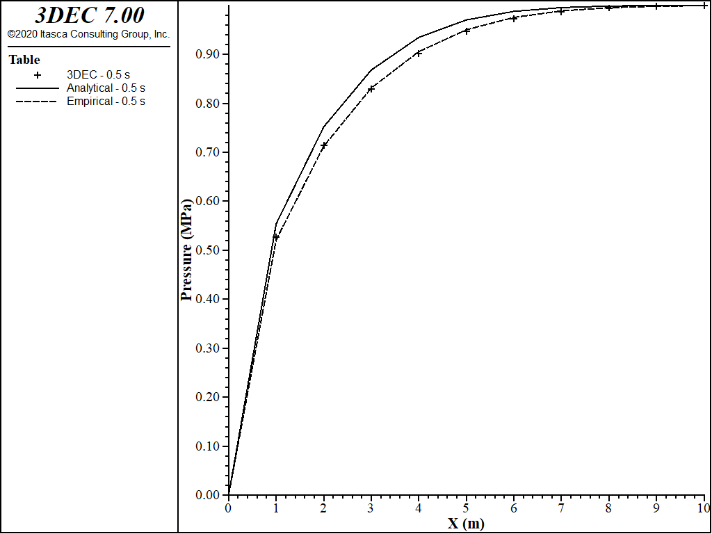
图 23：\(t\) =0.5 s 时，节理 \(x\) =0 至 \(x\) =10 之间的气压。

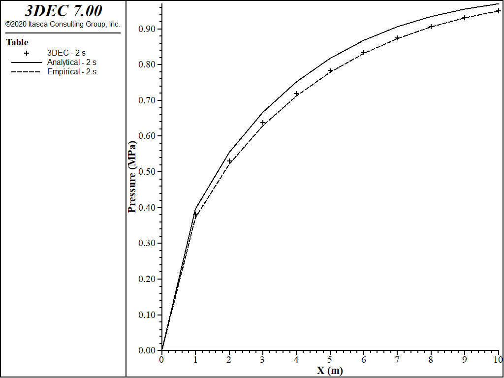
图 24：\(t\) =2.0 s 时，节理 \(x\) =0 至 \(x\) =10 之间的气压。
流量与流速
可通过／，或／绘制节理流动速率。也可通过 FISH 函数 flowplane.zone.discharge 和 flowplane.zone.velocity 访问。下文说明这些值的计算。

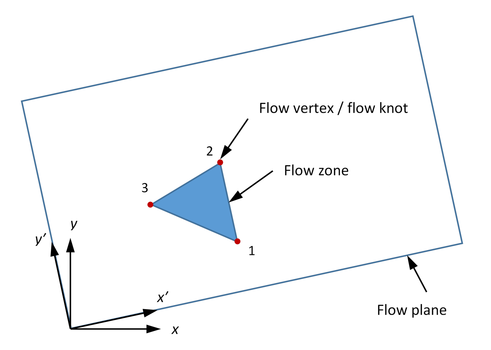
图 25：流动网格单元几何。
对于具有三个顶点的流动网格单元，见图 25（Figure 25），可构造消除重力影响的孔隙压力矢量：
其中，\(pp_i\) 为流动节点 \(i\) 处孔隙压力，\(\rho_f\) 为流体密度，\(\bf{g}\) 为重力矢量，\(\bf{x_i}\) 为流动节点全局位置。此处假设每个流动顶点对应一个流动节点，且二者重合。
随后可按以下方式计算梯度：
其中，\(A\) 为流动网格单元面积，\(x'_i\) 为第 \(i\) 个流动节点的局部 \(x\) 坐标，\(y'_i\) 为第 \(i\) 个流动节点的局部 \(y\) 坐标。
导流矩阵为：
其中，\(u_h\) 为水力开度，\(v\) 为流体黏度。于是，局部坐标流量为
要获得全局坐标流量，只需将二维局部流量矢量分量乘以三维局部坐标轴分量：
其中，\({\bf x'}\) 和 \({\bf y'}\) 为以全局坐标表示的局部轴矢量，\(q_{local}^{x'}\) 和 \(y' q_{local}^{y'}\) 为局部坐标中的流量矢量分量。
结果为单位 L2/T 的三维矢量，例如国际单位制中的 m2/s。FISH 内置函数 flowplane.zone.discharge 返回该矢量。
再除以网格单元平均开度，即可计算流动网格单元速度：
其中，\(u_{hi}\) 为第 \(i\) 个流动网格单元顶点对应的水力开度，结果单位为 L/T。FISH 内置函数 flowplane.zone.velocity 返回该矢量。
参考文献
Alvarez, T. A., Jr., E. J. Cording and R. A. Milhail.《岩石节理水力—力学行为：对已发表试验的重新解释》，载于《岩石力学》（第 35 届美国研讨会论文集，内华达大学里诺分校，1995 年 6 月），第 665-671 页。J. J. K. Daemen 和 R. A. Schultz 主编。鹿特丹：A. A. Balkema（1995）。
Bandis, S. C.《尺度效应对岩石节理抗剪强度和变形影响的试验研究》。博士学位论文，利兹大学（1980）。
Barton, N. R., S. C. Bandis and K. Bakhtar.《岩石节理的强度、变形与导流耦合》，Int. J. Rock Mech. Min. Sci. & Geomech. Abstr.，22(3)，121-140（1985）。
Batchelor, G. K.《流体动力学导论》。剑桥大学出版社（1967）。
Baumgart, B. G.《翼边多面体表示》，斯坦福人工智能项目，技术报告，备忘录 AIM-179、STAN-CS-320，斯坦福大学人文与科学学院计算机科学系（1972）。
Chan, D. Y. C., B. D. Hughes and L. Paterson.《钻孔周围瞬态气体流动》，Transport in Porous Media，10，137-152（1993）。
Detournay, E.《闭合岩石裂隙的水力传导性：试验与分析研究》，载于第 13 届加拿大岩石力学研讨会论文集，第 168-173 页（1980）。
Iwai, K.《单裂隙流体流动的基础研究》。博士学位论文，加利福尼亚大学伯克利分校（1976）。
Louis, C.《岩石水力学》，载于《岩石力学：固体力学系课程》，第 299-387 页。L. Muller 主编。乌迪内：Springer-Verlag（1974）。
Robin, P.-Y. F.《关于有效压力的说明》，J. Geophys. Res.，78(14)，2434-2437（1973）。
Walsh, J. B.《孔隙压力和围压对裂隙渗透性的影响》，Int. J. Rock Mech. Min. Sci. & Geomech. Abstr.，18，429-435（1981）。
Witherspoon, P. A. 等。《可变形岩石裂隙中流体流动立方定律的有效性》，Water Resources Res.，16(6)，1016-1024（1980）。
尾注
| [1] | 节理流动和变形方程沿节理厚度积分，因此节理的“几何维数”降低一维。 |
| 这些内容对您有帮助吗？… 版权与免责声明 |
FLAC3D © 2019, Itasca | 原文更新于 2020 年 10 月 8 日 |